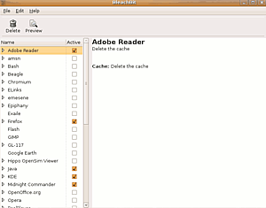

Bleachbit
Achtung!
Bleachbit sollte nie mit Administratorenrechten gestartet werden, da eine unbedachte Nutzung das System und auch Benutzerdaten gefährden kann.
Speziell bei KDE kann das Programm schwerwiegende Funktionsstörungen zur Folge haben, da es wichtige Systemressourcen löscht (vgl. den entsprechenden Blogbeitrag  von KWin-Entwickler Martin Gräßlin, 07/2012).
von KWin-Entwickler Martin Gräßlin, 07/2012).
Dieser Artikel wurde für die folgenden Ubuntu-Versionen getestet:
Ubuntu 14.04 Trusty Tahr
Zum Verständnis dieses Artikels sind folgende Seiten hilfreich:
Bleachbit ist ein Systembereinigungsprogramm für GNOME, KDE, und Xfce, mit dem temporäre Dateien einer Vielzahl von Anwendungen bereinigt werden können. Das Programm bietet sicherheitshalber eine Vorschau der vorzunehmenden Änderungen. Inzwischen wurde das in Python geschriebene Programm erweitert und steht auch für Windows zur Verfügung.
Installation¶
Das Programm kann über folgendes Paket installiert [1] werden:
bleachbit (universe)
 mit apturl
mit apturl
Paketliste zum Kopieren:
sudo apt-get install bleachbit
sudo aptitude install bleachbit
Fremdpaket¶
Von Bleachbit werden
DEB-Pakete  angeboten.
Die Pakete können für Ubuntu 14.04
heruntergeladen werden.
Nachdem man sie für die korrekte Ubuntuversion und Architektur geladen hat, müssen DEB-Pakete noch installiert werden.
angeboten.
Die Pakete können für Ubuntu 14.04
heruntergeladen werden.
Nachdem man sie für die korrekte Ubuntuversion und Architektur geladen hat, müssen DEB-Pakete noch installiert werden.
Hinweis!
Fremdpakete können das System gefährden.
Benutzung¶
 Nach der Installation kann man das Programm bei Ubuntu-Varianten mit einem Anwendungsmenü über "Systemwerkzeuge -> Bleachbit" ausführen.
Auf der rechten Seite des Programms kann ausgewählt werden, welche Systemprogramme oder welche Teile des Systems gesäubert werden sollen. Nach der Auswahl wird Bleachbit per "Delete" rechts oben gestartet. Nach dem Durchlauf des Programms zeigt Bleachbit an, was und wie viel gelöscht wurde. Wird direkt neben "Delete" auf "Preview" geklickt, zeigt Bleachbit an, wie viel aufgeräumt werden kann.
Falls eine neue Version auf der Herstellerseite zum Download bereit steht, informiert Bleachbit über die integrierte Aktualisierungsfunktion und die neue Version kann heruntergeladen und installiert werden. Beim nächsten Start ist Bleachbit aktualisiert.
Bleachbit entfernt u.a. temporäre Dateien folgender Anwendungen:
Eigene Reinigungsmodule¶
Zusätzlich zu den mitgelieferten Reinigungsmöglichkeiten ist es möglich, Bleachbit durch eigene oder Reinigungsmodule Dritter zu ergänzen. Dies ermöglicht es, auch neue oder seltenere Programme in die Reinigung einzubeziehen.
Achtung!
Besonders im Administratormodus können fehlerhafte Module das System irreparabel beschädigen, auch im nichtprivilegierten Modus sind schwere Datenverluste möglich. Bei der Verwendung eigener Module sollte entsprechende Sorgfalt walten.
Eigene Module können wahlweise im Verzeichnis /usr/share/bleachbit/cleaners global oder für den eigenen Nutzer im Verzeichnis ~/.config/bleachbit/cleaners abgelegt werden. Im zweiten Fall muss dafür das entsprechende Unterverzeichnis cleaners angelegt werden.
Das Modul besteht dabei immer aus einer einzelnen XML-Datei. Eine Beispieldatei ist auf der Projektseite erhältlich: example_cleaner.xml .
Im Folgenden wird beispielhaft ein Modul zum Löschen des Ordnerinhalts von ~/tmp vorgestellt. Text eingeschlossen durch:
1 | <!-- und -->
|
bildet dabei Kommentare, die vom Programm nicht interpretiert werden.
1 2 3 4 5 6 7 8 9 10 11 12 13 14 15 16 17 18 19 20 21 22 23 24 25 26 27 28 29 30 31 32 33 34 35 36 37 38 39 40 41 42 43 44 | <?xml version="1.0" encoding="UTF-8"?> <!-- Ein Reinigungsplugin benötigt genau ein Wurzelelement des Typs "cleaner". Das vergebene Attribut "id" muss systemweit eindeutig sein. --> <cleaner id="delwebtmp12252"> <!-- Titel des Plugins, muss genau einmal existieren. --> <label>User-TMP-Deleter</label> <!-- Beschreibung des Plugins --> <description>Löscht den Inhalt des Ordners ~/tmp/</description> <!-- Jedes Plugin besitzt mindestens eine Option. Diese bestimmt jeweils eine Unterfunktion des Plugins. --> <option id="mainoption12252"> <!-- Name der Unterfunktion, muss genau einmal existieren. --> <label>~/tmp löschen</label> <!-- Beschreibung der Unterfunktion --> <description>Löscht den Inhalt des Ordners ~/tmp/</description> <!-- Jede Funktion besitzt mindestens eine zugeordnete Aktion. Es gibt drei verschiedene Arten von Aktionen: * <action type="file">/tmp/secret.log</action> Löscht genau eine angegebene Datei * <action type="children" directories="false">/var/tmp/</action> Löscht alle Dateien unterhalb des angegebenen Verzeichnisses. Ist das Attribut ''"directories=true"'', wird auch die enthaltene Ordnerstruktur gelöscht. * <action type="glob">/tmp/*.bak</action> Löscht alle Dateien, auf die die Glob Definition zutrifft. Eine Beschreibung der Glob-Syntax findet sich z.B. unter [http://www.python.org/doc/2.5.2/lib/module-glob.html module-glob.html] {en}-. Im Folgenden werden alle Unterordner und Dateien von '''~/tmp/''' gelöscht. --> <action type="children" directories="true">~/tmp/</action> </option> </cleaner> |
 Übersicht Systemprogramme
Übersicht Systemprogramme- Erstellt mit Inyoka
-
 2004 – 2017 ubuntuusers.de • Einige Rechte vorbehalten
2004 – 2017 ubuntuusers.de • Einige Rechte vorbehalten
Lizenz • Kontakt • Datenschutz • Impressum • Serverstatus -
Serverhousing gespendet von